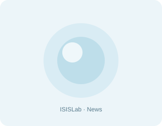

01 · Cloud · Edge · Simulation
Dal 1995 · Computer Science · University of Salerno
Dove il calcolo scalabile incontra la collaborazione aperta e l’interazione immersiva.
ISISLab unisce cloud/edge computing, simulazioni, sistemi complessi, open data, collaborazione, visualizzazione e XR per progettare sistemi che scalano e coinvolgono persone, studenti, comunità e l’industria.
Complex NetworkCloud & Edge ComputingMassive simulationsOpen Data co-creationPrivacy-aware collaborationVirtual RealityScalable visualization
Complex NetworkCloud & Edge ComputingMassive simulationsOpen Data co-creationPrivacy-aware collaborationVirtual RealityScalable visualization
1995Anno di fondazione
20+Progetti di ricerca
3Aree scientifiche
19Membri attuali
150+Studenti laureati
20+Dottori di ricerca
Direttrici di ricerca
Le principali linee di ricerca
Sviluppiamo soluzioni innovative che integrano sistemi distribuiti, collaborazione aperta e tecnologie immersive per affrontare le sfide della trasformazione digitale.
02 · Open Data · Privacy · Collaboration
Calcolo collaborativo e sociale
Open data, groupware, privacy, progettazione collaborativa e sistemi adattivi per comunità, studenti e industria. Esplora l’area03 · XR · Visualization · Interfaces
Visualizzazione e interazione
Visualizzazione scalabile, realtà virtuale, XR, serious game e interfacce innovative per dati, processi e patrimonio culturale. Esplora l’areaEsplora ISISLab
Tutto il laboratorio, in pochi percorsi.
Scegli cosa ti serve: ricerca, progetti, tesi, persone, eventi, impatto e collaborazioni. Ogni sezione ti porta subito al contenuto giusto.
Il laboratorio
Dal 1995 nel Dipartimento di Informatica UNISA: storia, gruppo, seminari, premi e sede.
Chi siamo · Persone · Seminari · Riconoscimenti
Ricerca
Tre linee: calcolo distribuito, collaborazione aperta, visualizzazione e interazione.
Tematiche · Pubblicazioni · SLR · Bibliometria
Progetti
XR, open data, cloud/edge, cybersecurity, didattica immersiva e ricerca applicata.
XRTwinScape · XRTourGuide · ROUTE-TO-PA · LibreRT
Didattica
Corsi, mobilità, seminari e risorse per orientarsi nella vita del laboratorio.
Lauree · Erasmus · Seminari
Tesi
Stage e tesi si svolgono in laboratorio, con confronto continuo e seminari regolari.
Stage · Tesi · FAQ · Modelli
Impatto sociale
Attività con scuole, open science, coding, divulgazione e territorio.
Public engagement · Scuole · Comunità
Enti esterni
Ricerca finanziata da enti pubblici e privati, convenzioni e dottorati industriali.
Convenzioni · Contratti · PhD industriale
News & Blog
Seminari, news, hackathon, risultati scientifici e attività del gruppo.
News · Blog · Seminari · Gallery
Ultime dal laboratorio

2026-10-12S.T.R.E.E.T.S. – Notte Europea dei Ricercatori 2026
ISISLab ha partecipato alla Notte Europea dei Ricercatori 2026 a Salerno con dimostrazioni di avatar 3D interattivi, intelligenza artificiale e tecnologie immersive.
Read →- 2026-09-28
Ricerca ISISLab alla NeurIPS: Hypergraph Generation with Latent Diffusion
Il lavoro di Carmine Spagnuolo e Valerio Di Pasquale sull’apprendimento generativo di ipergrafi è stato accettato alla conferenza NeurIPS.
Read → - 2026-05-19
XRTourGuide al Museo di Morigerati
Il 9 maggio il Museo Etnografico di Morigerati ha ospitato una sperimentazione con l’app XRTourGuide per la valorizzazione del territorio.
Read →
Entra nell’ecosistema ISISLab.
Studenti
Trova tesi, stage, seminari, modelli e risorse utili per iniziare il lavoro in laboratorio.
Ricercatori
Esplora pubblicazioni, progetti, output, dataset, software open-source e tematiche attive.
Partner
Scopri opportunità di collaborazione con scuole, enti pubblici, industria e consorzi europei.